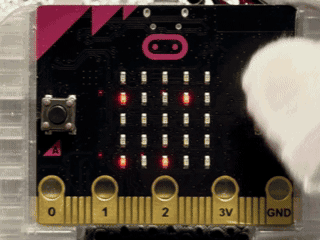
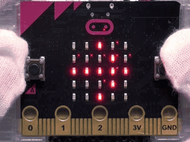
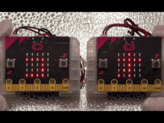
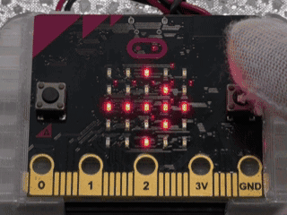
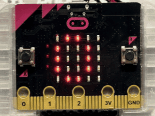

なわとびジャンプゲーム なわとびジャンプゲーム
このプログラムでは、micro:bitを使って、なわとびジャンプゲームを行うことができます。 このプログラムでは、micro:bitを使って、なわとびジャンプゲームを行うことができます。
使い方
- 「B」ひょうじ中にBボタンをおす 「B」表示中にBボタンを押す
- 「スタート」スクロール後にBボタンでジャンプそうさ 「スタート」スクロール後にBボタンでジャンプ操作
- なわが下の行に来たときのジャンプで1回カウント なわが下の行に来たときのジャンプで1回カウント
- しっぱい時にスコアを数でひょうじ 失敗時にスコアを数で表示
- 10回せいこうごとにスピードアップ（1倍 1.5倍 2倍 2.5倍） 10回成功ごとにスピードアップ（1倍 1.5倍 2倍 2.5倍）

ねらい
- くり返しの動きのりかい くり返しの動きの理解
- 数のカウントのしかたのりかい 数のカウントのしかたの理解
- スピードへんかとゲームせいのたいけん スピード変化とゲーム性の体験
チャレンジ
- ジャンプの時間をかえるくふう ジャンプの時間を変える工夫
- なわのスピードをかえるくふう なわのスピードを変える工夫
やじるし流れゲーム 矢印流れゲーム
このプログラムは、micro:bitを使って、上から流れてくる←と→のやじるしに合わせてAボタンとBボタンをすばやくおすゲームです。 このプログラムは、micro:bitを使って、上から流れてくる←と→の矢印に合わせてAボタンとBボタンをすばやく押すゲームです。
使い方
- 画面にBと→がこうごにひょうじされる（待ち受けじょうたい） 画面にBと→が交互に表示される（待ち受け状態）
- Bボタンで「スタート」の文字がじゅんばんにひょうじされる Bボタンで「スタート」の文字が順番に表示される
- スタートひょうじのあとに←か→のやじるしが上から下へ流れてくる スタート表示のあとに←か→の矢印が上から下へ流れてくる
- ←のときにAボタンをおす ←のときにAボタンを押す
- →のときにBボタンをおす →のときにBボタンを押す
- 正しいボタンでせいこうすると次のやじるしが出る 正しいボタンで成功すると次の矢印が出る
- 10回せいこうごとに矢印のスピードアップ 10回成功ごとに矢印のスピードアップ
- おしまちがいかおしおくれで×が出てゲームが終わる 押し間違いか押し遅れで×が出てゲームが終わる
- 終わったあとにせいこう回数がひょうじされて待ち受けにもどる 終わったあとに成功回数が表示されて待ち受けに戻る

ねらい
- 左右の合図とボタンそうさのたいおうづけ 左右の合図とボタン操作の対応づけ
- 時間をいしきしたすばやいはんだんのたいけん 時間を意識したすばやい判断の体験
- くり返しできろくをのばす活動 くり返しで記録をのばす活動
チャレンジ
- 10回せいこうごとの速さの上がり方の調整 10回成功ごとの速さの上がり方の調整
- せいこうしたときの音やマークのへんかのついか 成功したときの音やマークの変化の追加
- 友だちと交代してさいこうきろくをきそうルール作り 友だちと交代して最高記録を競うルール作り
むせんスタートランプ（おやき） 無線スタートランプ（親機）
このプログラムは、micro:bitの「むせんきのう」を使って、先生のおやきから運動会のスタートランプの合図を送るしくみです。 このプログラムは、micro:bitの「無線機能」を使って、先生の親機から運動会のスタートランプの合図を送るしくみです。
使い方
- たいき中に「オヤキ」の文字がじゅんばんに出る 待機中に「オヤキ」の文字が順番に出る
- Bボタンでてんとうの「T」合図をこきへ送る Bボタンで点灯の「T」合図を子機へ送る
- そうしん後にこきのランプてんとうがつづくことのかくにん 送信後に子機のランプ点灯が続くことの確認
- もう一度Bボタンでしょうとうの「S」合図をこきへ送る もう一度Bボタンで消灯の「S」合図を子機へ送る
- そうしん後に開始画面の「オヤキ」にもどるかくにん 送信後に開始画面の「オヤキ」にもどる確認

ねらい
- そうしんを行うおやきのやくわりのりかい 送信を行う親機の役割の理解
- 合図を送ってじょうたいを切りかえるたいけん 合図を送って状態を切りかえる体験
- 運動会の進行をICTで支える学習 運動会の進行をICTで支える学習
チャレンジ
- 合図の文字をふやすルール作り 合図の文字を増やすルール作り
- クラスごとのグループ番号分けのくふう クラスごとのグループ番号分けの工夫
- そうしんのタイミングをそろえるくふう 送信のタイミングをそろえる工夫
むせんスタートランプ（こき） 無線スタートランプ（子機）
このプログラムは、micro:bitの「むせんきのう」を使って、おやきの合図を受け取るとこきがスタートランプとして光りつづけるしくみです。 このプログラムは、micro:bitの「無線機能」を使って、親機の合図を受け取ると子機がスタートランプとして光り続けるしくみです。
使い方
- たいき中に「コキ」の文字がじゅんばんに出る 待機中に「コキ」の文字が順番に出る
- おやきからてんとうの「T」合図を受け取ると全てのランプがてんとうする 親機から点灯の「T」合図を受け取ると全てのランプが点灯する
- てんとうが「S」合図までつづくことのかくにん 点灯が「S」合図まで続くことの確認
- おやきからしょうとうの「S」合図を受け取るとしょうとうし、「コキ」ひょうじへもどる 親機から消灯の「S」合図を受け取ると消灯し、「コキ」表示へ戻る
- Bボタンで自分のこきだけたいきひょうじにもどす Bボタンで自分の子機だけ待機表示に戻す

ねらい
- じゅしんを行うこきのやくわりのりかい 受信を行う子機の役割の理解
- 同時に光る合図のたいけん 同時に光る合図の体験
- そうしんとじゅしんでやくわりが分かれる学習 送信と受信で役割が分かれる学習
チャレンジ
- てんとうをてんめつにかえるくふう 点灯を点滅に変える工夫
- たいき中のひょうじをべつの言葉にかえるくふう 待機中の表示を別の言葉に変える工夫
- じゅしん回数のきろくを加えるくふう 受信回数の記録を加える工夫
日ざしキケンアラーム 日差しキケンアラーム
このプログラムでは、micro:bitの「光センサー」を使って、太陽の光が強すぎるときに「キケン」とひょうじしてにっしゃ病をふせぐ合図を出すしくみです。 このプログラムでは、micro:bitの「光センサー」を使って、太陽の光が強すぎるときに「キケン」と表示して日射病をふせぐ合図を出すしくみです。
使い方
- 画面にBと→がこうごにひょうじされる 画面にBと→が交互に表示される
- Bボタンで見守りスタート Bボタンで見守りスタート
- 5秒ごとに光の強さをはかり、点のグラフでひょうじする 5秒ごとに光の強さを測り、点のグラフで表示する
- 太陽の光が強すぎると「キケン」とひょうじされる 太陽の光が強すぎると「キケン」と表示される
- 動作中にBボタンで「ストツプ」をひょうじし、開始画面へもどる 動作中にBボタンで「ストツプ」を表示し、開始画面へ戻る

ねらい
- 光センサーで太陽の光の強さを知るたいけん 光センサーで太陽の光の強さを知る体験
- あぶないときに日かげへいどうするはんだんの学習 危ないときに日かげへ移動する判断の学習
- きろくのグラフから光のへんかを読み取る練習 記録のグラフから光の変化を読み取る練習
チャレンジ
- 自分がまぶしいと感じる明るさに合わせたしきいちの見直し 自分がまぶしいと感じる明るさに合わせたしきい値の見直し
- 「キケン」の出る長さや回数のへんこう 「キケン」の出る長さや回数の変更
- 光のきろく回数やきろくかんかくをかえるくふう 光の記録回数や記録間隔を変える工夫
LEDラップカウンター LEDラップカウンター
このプログラムは、micro:bitを使って、ラップ（しゅうかい）の数やプールのおうふく数をカウントするために、進みぐあいをLEDで見えるようにするしくみです。 このプログラムは、micro:bitを使って、ラップ（周回）の数やプールの往復数をカウントするために、進みぐあいをLEDで見えるようにするしくみです。
使い方
- 起動時に「0」がひょうじされる 起動時に「0」が表示される
- BボタンをおすたびにLEDが左下から上に1こずつてんとうする Bボタンを押すたびにLEDが左下から上に1個ずつ点灯する
- LEDが25こぜんぶてんとうするとゴールマークがひょうじされる LEDが25個ぜんぶ点灯するとゴールマークが表示される
- Aボタンで今のLEDの数がひょうじされる Aボタンで今のLEDの数が表示される
- その後「0」にもどり、カウントがリセットされる その後「0」に戻り、カウントがリセットされる

ねらい
- しゅうかい数やプールのおうふく数を自分で数えるじこかんりのたいけん 周回数やプールの往復数を自分で数える自己管理の体験
- へんすうがふえるとLEDがふえるつながりのりかい 変数が増えるとLEDが増えるつながりの理解
- けっかを見てふり返ってからリセットする学習 結果を見てふり返ってからリセットする学習
チャレンジ
- ゴールのアイコンをべつのマークにかえるくふう ゴールのアイコンを別のマークに変える工夫
- 5こごとに中間チェックの合図を出すついか 5個ごとに中間チェックの合図を出す追加
- LEDがてんとうする向きをかえるルール作り LEDが点灯する向きを変えるルール作り
本情報の内容 (添付文書、リンク先などを含む) は、 作成日時点でのものであり、 予告なく変更される場合があります。